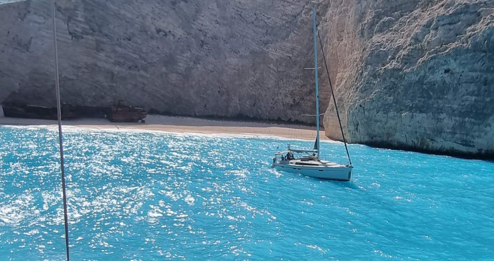

Some of you might already know it as Shipwreck Beach, is one of the most iconic and stunning beaches around the world. Its breathtaking beauty is defined by its pristine white sands, crystal-clear turquoise waters, and dramatic limestone cliffs that tower above the shoreline. What makes Navagio Beach truly unique is the rusting wreck of a smuggler's ship, which ran aground here in the early 1980s. This intriguing relic adds an air of mystery and adventure to the already stunning landscape, making it a magnet for both families, couples and in general adventure seekers.
Navagio Beach
- Nice place to take pictures
- Awesome view from the top of the cliff
- Clean sea for swimming
- Soft sand to relax and enjoy sunbathing
- Parachute is also an option for more extreme type of people